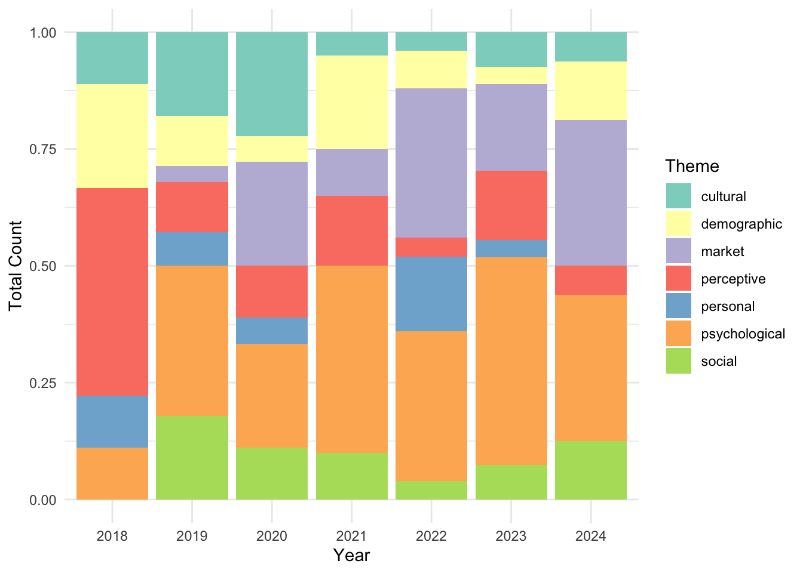
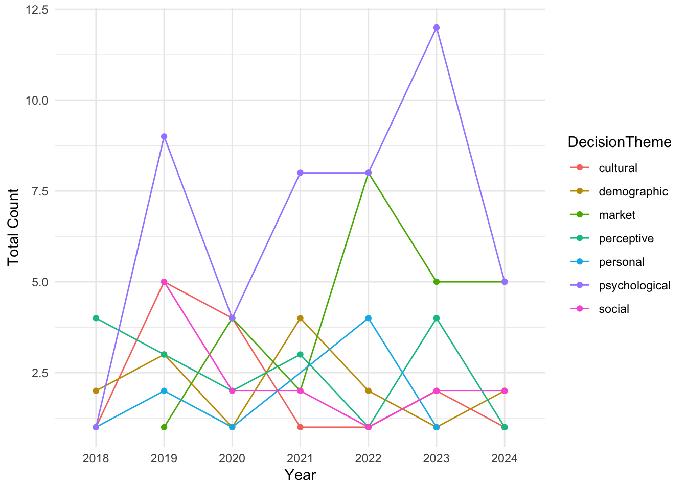

import numpy as np
database = np.array([
{
'id': 'string', # unique identifier for the paper following convention P2_#number
'title': 'string', # title of the paper
'AffiliationCountry': 'string' , #name of country the study was conducted in,
'year': 2018-2024, # year of publication a value between 2018 and 2024
'journal': 'string', # name of the journal the paper was published in
'citations': 0-1000, # number of citations the paper has received - not reported in the paper
'year_since': 3, # number of years since publication - not reported in the paper
'cpy': 0, # number of citations per year - not reported in the paper
'keywords': ['TAM', 'mbanking', 'awareness'], # list of keywords, broken into K1-K10
'abstract': 'string', # abstract of the paper
'F': ['perceived usefulness'], # factors significant in the study, broken into F1-F9
'FN': ['another factor'], # factors not significant in the study, broken into FNS1-FNS4
'limit': ['geographical context'], # limitations of the study, broken into LIMIT1-LIMIT3
'typeofResearch': 'string', # type of research conducted in the study
'methods': ['regression analysis'], # methods used in the study, broken into METHOD1-METHOD4
'theory': ['TAM'] # theories used in the study, broken into THEORY1-THEORY4
'sampleSize': 100, # sample size of the study
'tech': 'string', # main technology studied
'man_theme': 'string', # Theme manually assigned by me
'algo_theme': 'string', # Theme assigned by the algorithm
'decision_Theme': 'string', # Final theme of the paper
'Score_Sig': 0.0, # % of significance for factors
'Score_NOT_Sig': 0.0, # % of non-significance for factors
}
])The Inner Workings of Mobile Banking Adoption: A Systematic Literature Review of Intrinsic Factors
Part 1. Data Collection
I downloaded the pdf of all the papers (143), reading them and extracting meta data based on the following:
Part 1.1 Finding Out Themes
Part 2. Data Analysis
Part 2.1 Data Cleaning and Prep
The R libraries used for data analysis are as follows:
library(readr)
library(dplyr)
library(stringr)
library(purrr)
library(ggplot2)
library(psych)
library(tidyr)
library(stargazer)
library(forcats)
library(xtable)
library(ggraph)
library(igraph)
library(gt)
library(ggpubr)Looking at the data:
df <- read.csv("data/P2_AR_07.csv")
glimpse(df)Rows: 143
Columns: 62
$ Reason_Theme <chr> "comparative", "behavioral intention", "keywords", …
$ CiteKey <chr> "LonkaniAcomparativeStudyOfTrust2020", "SaprikisACo…
$ ID <chr> "p2_01", "p2_02", "p2_03", "p2_04", "p2_05", "p2_06…
$ Algo_Theme <chr> "psychological, cultural, demographic", "psychologi…
$ DecisionTheme <chr> "cultural", "psychological", "psychological", "cult…
$ Man_Theme <chr> "cultural, psychological", "social, psychological",…
$ Match <int> 1, 1, 1, 0, 1, 1, 1, 1, 1, 1, 1, 1, 1, 1, 1, 1, 1, …
$ Title <chr> "a comparative study of trust in mobile banking: an…
$ Year <int> 2020, 2022, 2021, 2019, 2020, 2020, 2024, 2020, 201…
$ PublicationTitle <chr> "journal of global information management", "inform…
$ Creators <chr> "ravi lonkani, chuleeporn changchit, tim klaus, jom…
$ Publisher <chr> "igi global", "mdpi", "igi global", "elsevier", "wi…
$ AffiliationCountry <chr> "thailand", "greece", "brazil, south korea, usa", "…
$ K1 <chr> "technology acceptance model", "word-of-mouth", "em…
$ K2 <chr> "initial trust", "mobile-banking", "consumer adopti…
$ K3 <chr> "consumer acceptance", "acceptance model", "initial…
$ K4 <chr> "gender-differences", "information-technology", "in…
$ K5 <chr> "normative beliefs", "consumer adoption", "anxiety"…
$ K6 <chr> "national culture", "moderating role", "acceptance"…
$ K7 <chr> "usage intentions", "utaut model", "commerce", "emp…
$ K8 <chr> "privacy concerns", "services", "traits", "acceptan…
$ K9 <chr> "internet users", "internet", "usage", "mediating r…
$ K10 <chr> "online trust", "determinants", "satisfaction", "ad…
$ Num_Factors <int> 5, 8, 5, 6, 4, 6, 4, 5, 4, 4, 8, 4, 5, 3, 6, 8, 6, …
$ F1 <chr> "cltr", "peex", "self", "habt", "attd", "pu", "prgt…
$ F2 <chr> "norm_blf", "socinf", "trst", "psec", "intrac", "pe…
$ F3 <chr> "prv_exp", "fac_cond", "peou", "ppriv", "cltr", "so…
$ F4 <chr> "competnc", "risk", "pu", "trst", "innov", "fac_con…
$ F5 <chr> "trst", "anxiety", "intnt_use", "peex", "", "trst",…
$ F6 <chr> "", "rwrd", "", "price", "", "prisk", "", "", "", "…
$ F7 <chr> "", "sec", "", "", "", "", "", "", "", "", "habt", …
$ F8 <chr> "", "recom", "", "", "", "", "", "", "", "", "price…
$ F9 <chr> "", "", "", "", "", "", "", "", "", "", "", "", "",…
$ F1_THEME <chr> "social", "personal", "psychological", "personal", …
$ F2_THEME <chr> "social", "social", "psychological", "perceptive", …
$ F3_THEME <chr> "personal", "external", "perceptive", "perceptive",…
$ F4_THEME <chr> "external", "external", "perceptive", "psychologica…
$ F5_THEME <chr> "psychological", "psychological", "psychological", …
$ F6_THEME <chr> "", "external", "", "external", "", "perceptive", "…
$ F7_THEME <chr> "", "external", "", "", "", "", "", "", "", "", "pe…
$ F8_THEME <chr> "", "external", "", "", "", "", "", "", "", "", "ex…
$ F9_THEME <chr> "", "", "", "", "", "", "", "", "", "", "", "", "",…
$ NUM_FAC_NOTSIG <int> 2, 2, 0, 4, 0, 0, 0, 0, 0, 1, 0, 0, 0, 0, 1, 1, 0, …
$ FNS1 <chr> "age", "efex", "", "peex", "", "", "", "", "", "soc…
$ FNS2 <chr> "sex", "fac_cond", "", "pval", "", "", "", "", "", …
$ FNS3 <chr> "", "", "", "socinf", "", "", "", "", "", "", "", "…
$ FNS4 <chr> "", "", "", "hed_motiv", "", "", "", "", "", "", ""…
$ ResearchType <chr> "comparative", "empirical", "empirical", "empirical…
$ SampleSize <int> 560, 837, 458, 901, 1340, 755, 418, 203, 384, 127, …
$ METHOD1 <chr> "regression", "cfa", "cfa", "sem", "multigroup sem"…
$ METHOD2 <chr> "", "sem", "sem", "", "", "", "", "", "", "", "", "…
$ METHOD3 <chr> "", "", "", "", "", "", "", "", "", "", "", "", "",…
$ METHOD4 <chr> "", "", "", "", "", "", "", "", "", "", "", "", "",…
$ Tech <chr> "mobile banking", "mobile banking", "mobile banking…
$ THEORY1 <chr> "hcd", "utaut", "tam", "utaut2", "tam", "tam", "dct…
$ THEORY2 <chr> "", "", "", "", "tpb", "", "", "", "tpb", "", "utau…
$ THEORY3 <chr> "", "", "", "", "", "", "", "", "", "", "", "", "",…
$ THEORY4 <chr> "", "", "", "", "", "", "", "", "", "", "", "", "",…
$ LIMIT1 <chr> "sample", "sample", "sample", "sample", "no_long", …
$ LIMIT2 <chr> "", "cross_cult", "bias", "no_mod", "bias", "sample…
$ LIMIT3 <chr> "", "incomp_fac", "question", "incomp_fac", "no_mod…
$ Abstract <chr> "with the rapid growth of mobile phone usage, mobil…Summary statiscs
psych::describe(df %>%
dplyr::select(Year, Match, Num_Factors, NUM_FAC_NOTSIG, SampleSize)) %>%
dplyr::select(vars, n, mean, sd, median, min, max) vars n mean sd median min max
Year 1 143 2021.18 1.84 2021 2018 2024
Match 2 143 0.94 0.23 1 0 1
Num_Factors 3 143 5.31 1.60 5 2 9
NUM_FAC_NOTSIG 4 143 0.46 0.87 0 0 4
SampleSize 5 103 894.50 3189.24 384 26 25000Woah! One paper has 25,000 and that is messing up the sample sizes. Remembering this study’s ID:
df %>% filter(SampleSize == 25000) %>%
dplyr::select(ID, Title, SampleSize) ID
1 p2_77
Title
1 financial literacy, behavioral traits, and epayment adoption and usage in japan
SampleSize
1 25000Setting aside the study with sample size of 25,000:
psych::describe(
df %>% dplyr::select(Year, Match, Num_Factors, NUM_FAC_NOTSIG, SampleSize) %>%
filter(SampleSize != 25000)) %>%
dplyr::select(vars, n, mean, sd, median, min, max) vars n mean sd median min max
Year 1 102 2021.14 1.86 2021 2018 2024
Match 2 102 0.94 0.24 1 0 1
Num_Factors 3 102 5.15 1.65 5 2 9
NUM_FAC_NOTSIG 4 102 0.54 0.95 0 0 4
SampleSize 5 102 658.18 2112.42 384 26 21526Welp! Another large study.
df %>% filter(SampleSize == 21526) %>%
dplyr::select(ID, Title, SampleSize) ID
1 p2_59
Title
1 exploring mobile banking adoption and service quality features through user-generated content: the application of a topic modeling approach to google play store reviews
SampleSize
1 21526Setting aside the study with sample size of 25,000 and the one with 21,52 as they are outliers:
psych::describe(
df %>% filter(!ID %in% c('p2_59','p2_77')) %>%
dplyr::select(ID, Year,Match, Num_Factors, NUM_FAC_NOTSIG, SampleSize)) %>%
dplyr::select(vars, n, mean, sd, median, min, max) vars n mean sd median min max
ID* 1 141 71.00 40.85 71 1 141
Year 2 141 2021.16 1.85 2021 2018 2024
Match 3 141 0.94 0.23 1 0 1
Num_Factors 4 141 5.33 1.60 5 2 9
NUM_FAC_NOTSIG 5 141 0.47 0.87 0 0 4
SampleSize 6 101 451.56 330.40 384 26 2202Counting the unique values for each of the columns:
results <- c(
paste('Number of Unique Values in ID: ', n_distinct(df$ID)),
paste('Number of Unique Values in Title: ', n_distinct(df$Title)),
paste('Number of Unique Values in PublicationTitles: ', n_distinct(df$PublicationTitle)),
paste('Number of Unique Values in Publisher: ', n_distinct(df$Publisher)),
paste('Number of Unique Values in AffiliationCountry: ', n_distinct(df$AffiliationCountry)),
paste('Number of Unique Values in Factors: ', dplyr::n_distinct(df %>% dplyr::select(F1:F9) %>% unlist())),
paste('Number of Unique Values in Not Sig: ', dplyr::n_distinct(df %>% dplyr::select(FNS1:FNS4) %>% unlist())),
paste('Number of Unique Values in Methods: ', dplyr::n_distinct(df %>% dplyr::select(METHOD1:METHOD4) %>% unlist())),
paste('Number of Unique Values in Theory: ', dplyr::n_distinct(df %>% dplyr::select(THEORY1:THEORY4) %>% unlist())),
paste('Number of Unique Values in Limits: ', dplyr::n_distinct(df %>% dplyr::select(LIMIT1:LIMIT3) %>% unlist())),
paste('Number of Unique Values in ResearchType: ', n_distinct(df$ResearchType)),
paste('Number of Unique Values in Authors: ', n_distinct(df$Creators)),
paste('Number of Unique Values in Keywords: ', dplyr::n_distinct(df %>% dplyr::select(K1:K10) %>% unlist())),
paste('Number of Unique Values in Tech: ', n_distinct(df$Tech)),
paste('Number of Unique Values in Themes: ', n_distinct(df$DecisionTheme))
)
cat(results, sep = "\n")Number of Unique Values in ID: 143
Number of Unique Values in Title: 143
Number of Unique Values in PublicationTitles: 54
Number of Unique Values in Publisher: 15
Number of Unique Values in AffiliationCountry: 43
Number of Unique Values in Factors: 233
Number of Unique Values in Not Sig: 32
Number of Unique Values in Methods: 42
Number of Unique Values in Theory: 44
Number of Unique Values in Limits: 16
Number of Unique Values in ResearchType: 16
Number of Unique Values in Authors: 137
Number of Unique Values in Keywords: 413
Number of Unique Values in Tech: 9
Number of Unique Values in Themes: 7Checking the sample sizes Without the outliers:
psych::describe(
df %>% filter(!ID %in% c('p2_59','p2_77')) %>%
dplyr::select(SampleSize)) %>%
dplyr::select(n, mean, sd, median, min, max) n mean sd median min max
SampleSize 101 451.56 330.4 384 26 2202noOutliers <- df %>% filter(!ID %in% c('p2_59','p2_77'))
quantiles <- quantile(noOutliers$SampleSize, na.rm = T)
quantile_binned <- cut(df$SampleSize,
breaks = quantiles,
labels = c("SQ1", "SQ2", "SQ3", "SQ4"),
include.lowest = TRUE)
df$SampleSizeBin <- quantile_binned
df <- df %>% mutate(
SampleSizeBin = if_else(
is.na(SampleSizeBin),
"NotStated",
SampleSizeBin
)
)
df %>% count(SampleSizeBin) SampleSizeBin n
1 NotStated 42
2 SQ1 26
3 SQ2 28
4 SQ3 23
5 SQ4 24Part 2.2 Data Analysis
Now let’s actually do some analysis. Let’s visualize how the themes of the papers have changed across the years. I will first generate a bar plot that fills the bars at each year (as a categorical factor) with proportions of themes in that year. This is an aggregation that happens under the hood, and using position = "fill" will actually make sure all the bars consider things relative to eachother, filling the full 100% of the bar.
ggplot(df, aes(x = as.factor(Year), fill = DecisionTheme)) +
geom_bar(position = "fill") +
theme_minimal() +
labs(fill = "Theme",
x = "Year",
y = "Total Count") +
fill_palette("Set3")
To see how things move/flow over the years, a line chart is a great idea:
df %>%
dplyr::count(DecisionTheme, Year) %>%
ggplot(aes(x = as.factor(Year), y = n, color = DecisionTheme, group = DecisionTheme)) +
geom_line() +
geom_point() +
theme_minimal() +
labs(fill = "Theme",
x = "Year",
y = "Total Count") +
fill_palette("Dark2")